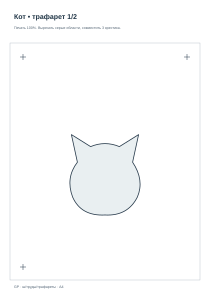
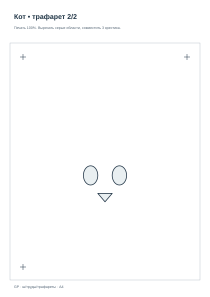

Авторский учебный SVG-образец
6 класс33 минутЛегко
Кот
Уши и большой силуэт — первый слой. Глаза и нос — второй.
Слой 1: охристая / светло-коричневая
Слой 2: чёрная


Примеры изображений и слоёв



Серые области вырезаются. Оба трафарета формата А4 распечатать при масштабе 100%.
Ингредиенты и инструменты для этого варианта
Материалы на одну работу
- 3 листа А4: 2 для трафаретов + 1 основа
- Плотная бумага для масок (по возможности)
- Гуашь: охристая / светло-коричневая
- Гуашь: чёрная
- 2 небольших кусочка поролона
- Малярный скотч (несколько полосок)
- Салфетки
Инструменты
- Ножницы
- Карандаш
- Линейка
- Принтер для готовых SVG (необязательно)
- Для внутренних вырезов — подготовительная помощь учителя
Аэрозоль для школьной версии не нужен.
Наличие материалов
Флажки сохраняются в браузере и связаны с разделом «Материалы».
Процесс быстро
1
Подготовить два цветовых трафарета
2
Нанести охристая / светло-коричневая
3
Подсушить и совместить кресты
4
Нанести чёрная
Процесс подробно
1
Вырежьте основной силуэт головы с ушами.
2
Второй трафарет: отдельно вырежьте глаза и нос; внутренние отверстия подготовит учитель.
3
Зафиксируйте первый лист и нанесите охристый цвет губкой.
4
Снимите и подсушите первый слой.
5
Совместите кресты второго листа с крестами на основе.
6
Нанесите тёмные глаза и нос. Снимите маску.
Совет: Не переливайте краску около небольших отверстий глаз. Не накладывайте второй трафарет на влажную краску.